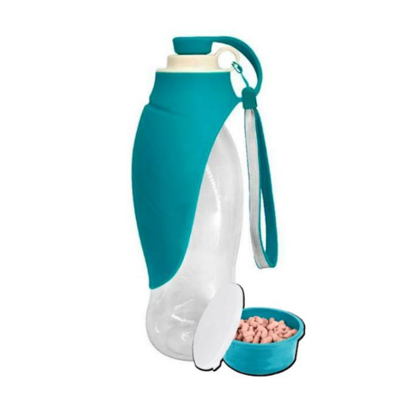

-
1 L flaske

Vores 1 L flaske er lavet af genanvendeligt plast. Materiallet tåler opvaskemaskine. Fås i blå, grøn og rød.
pris: 175 kr.
bestil her -
1.5 L flaske

Vores 1.5 L flaske er lavet af genanvendeligt plast. Materiallet tåler opvaskemaskine. Fås i blå, grøn og rød.
pris: 200 kr.
bestil her -
2 L flaske
Vores 2 L flaske er lavet af genanvendeligt plast. Materiallet tåler opvaskemaskine. Fås i blå, grøn og rød.
pris: 200 kr.
bestil her -
Påhæng

vores flaske kommer med et påsættelses tilbehør, og man kan købe dem seperat. vi har karabinhage så flasken kan sættes på selen eller andet sted. et elastik bånd til påsættelse på armen, eller benet, samt bælteklemme til påsættelse på bæltet.
seperat pris: 50 kr.
bestil her -
Silikoneskål

vores silikoneskåle kommer i small, medium og large størrelse, så du kan vælge den der passer til din hund. fås i flere farver.
seperat pris:50 kr.
bestil her -
Godbids tilbehør
vores godbidskål af plast, kan klikkes på i bunden, så man altid kan have godbidder ved hånden. den kan tilkøbes for en pris af : 30 kr.
bestil her
Vores produkter
Vandflasken er skabt med en hætte, som fungere som låg, der er et separat hul ved siden af hvor der kan klemmes vand ud, som bliver holdt lukket af silikoneskålen der er foldet omkring flasken, som foldes ud ved brug. man folder skålen ud, og holder flasken på hovedet, og trykker let, for at der kommer vand ud. når din hund så er færdig med at drikke, vil vanddråberne prelle af pgs. materialet på skålen. Hvis du skulle gå hen og blive tørstig efter din hunds slubren, kan du tage hætten af, og drikke af den rene del af flasken.